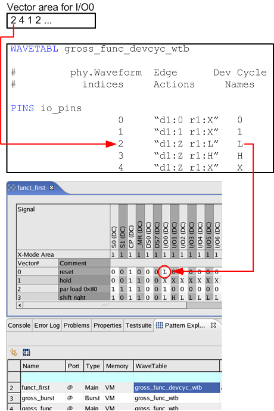
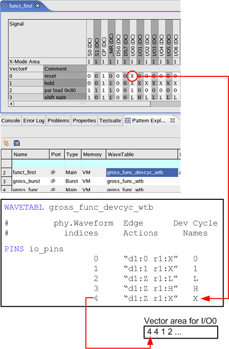

Function of the base wavetable
In SmarTest wavetables can have two different functions:
- base wavetable and
- primary wavetable.
The base wavetable is used to display and edit the device cycle names or state characters in the Pattern Editor. You assign the base wavetable to a pattern in the Pattern Explorer.
The primary wavetable is used for test execution. You can assign a primary wavetable to a testsuite in the testsuite dialog or in a testmethod.
Usually the same wavetable is used for both functions, but SmarTest allows to use different wavetables.
Example
In the example described here a setup is used, which consists of the pattern
func_first and the wavetable gross_func_devcyc_wtb used as base
wavetable.
When you open the pattern func_first with
the Pattern Editor, the following actions are performed by the Pattern Debug Tool:
- It checks, which base wavetable is assigned to the pattern
func_first. The wavetablegross_func_devcyc_wtbis assigned. - It reads the memory
- It reads the physical waveform DC/DC power units of the pattern
func_firstfrom the vector areas of the channels that are associated with a configured pin. A vector area is part of the tester channel memory. - It translates the physical waveform DC/DC power units stored in the vector area into device cycle
names. Therefore the wavetable
gross_func_devcyc_wtbis used. - It displays the device cycle names in the Pattern Editor.

When you change a cell in the Pattern Editor, the following actions are performed by the Pattern Debug Tool:
- It checks, which base wavetable is assigned to the pattern
func_first. The wavetablegross_func_devcyc_wtbis assigned. - It translates the changed device cycle names into physical waveform DC/DC power units. Therefore the
wavetable
gross_func_devcyc_wtbis used. - It writes the physical waveform DC/DC power units to the vector area of the pin I/O0. The vector area
of each tester channel stores the physical waveform DC/DC power units.

Functional changes
- Introduced before SmarTest 6.3.2